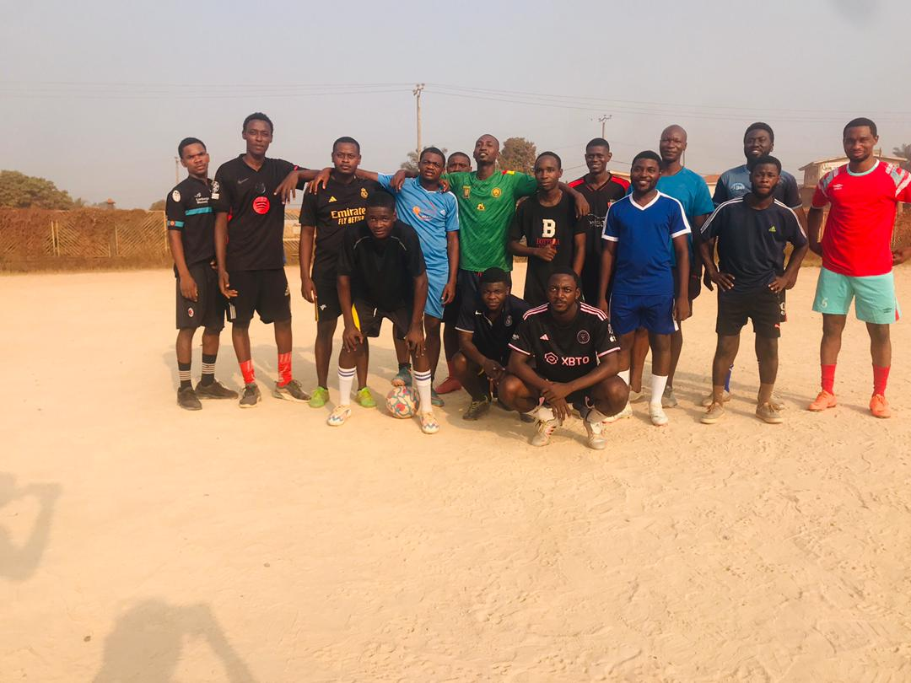

Préparation de Pâques 2025
Découvrez le programme complet de la Semaine Sainte : confessions, chemin de croix, et célébrations spéciales pour vivre pleinement le mystère pascal.
Lire la suite →
Rencontre mensuelle des jeunes
Rejoignez-nous pour la rencontre mensuelle des jeunes de la paroisse. Au programme : partage, prière et activités fraternelles.
Lire la suite →
Recrutement chorale paroissiale
La chorale paroissiale recherche de nouvelles voix. Répétitions les mercredis et samedis à partir de 17h30. Venez partager votre talent !
Lire la suite →
Adoration eucharistique
Tous les mercredis, venez vivre un moment privilégié d'adoration eucharistique. Un temps de silence et de prière pour nourrir votre âme.
Lire la suite →
Visite aux malades
Notre équipe de bénévoles organise des visites régulières aux personnes malades et âgées. Rejoignez-nous dans cette mission de charité.
Lire la suite →
Pèlerinage des jeunes
Préparez-vous pour le pèlerinage annuel des jeunes prévu en mars. Inscriptions ouvertes dès maintenant. Une expérience spirituelle unique !
Lire la suite →